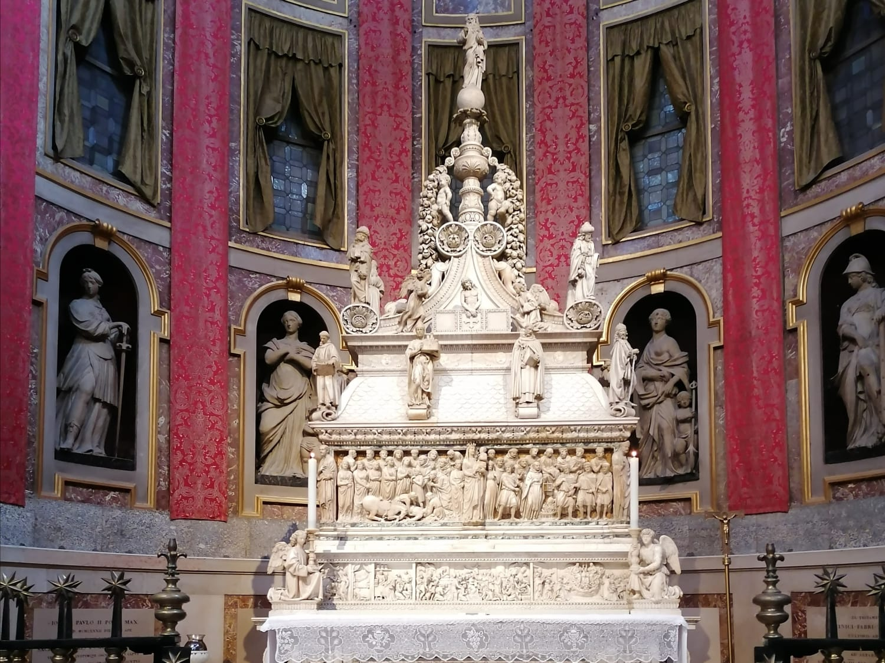
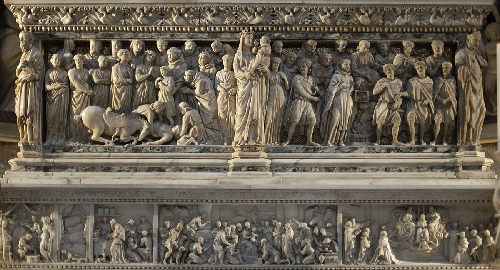

Catalogo completo

Tutti i metadati
Arca di San Domenico
- Creatore: Nicola Pisano, Niccolò dell'Arca, Michelangelo Buonarroti, Alfonso Lombardi, Girolamo Coltellini
- Data: 1264-1532
- Istituzione fornitrice: Basilica di San Domenico

Card title
Some quick example text to build on the card title and make up the bulk of the card's content.
Tutti i metadati